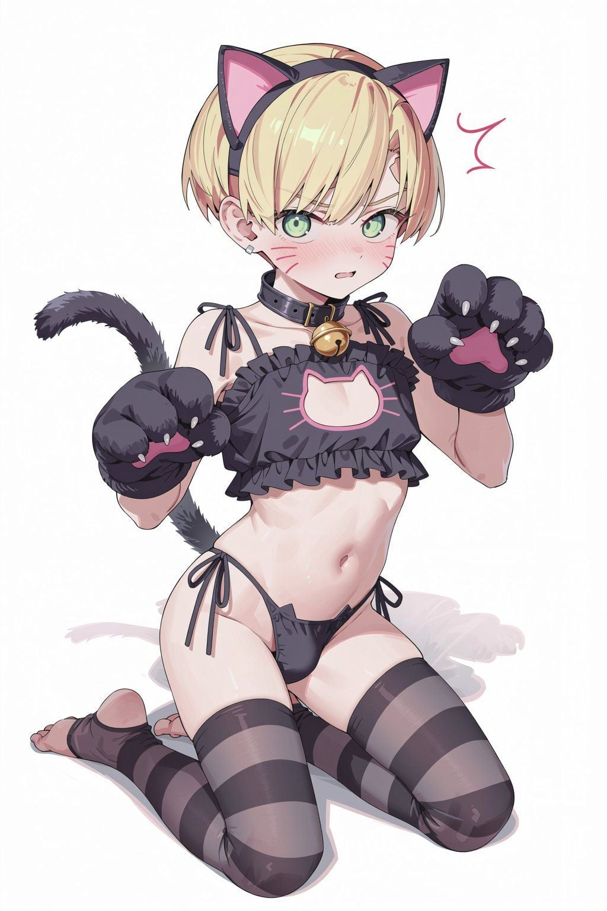
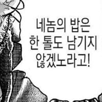

42 · 45 · 40 분 전 · 원문

어흐
수집 당시 댓글 5개
히루 · 12 일 전
게임은PC로 · 12 일 전
생각해보면 나이트시티에 흔치 않은 생체좆 소유자 아닌가
코드싫어 · 11 일 전
후욱후욱오호혹 · 11 일 전

나쁜말안함 · 11 일 전
멜스트롬 불러다가 거기만 바꾸면 되잖아??

생각해보면 나이트시티에 흔치 않은 생체좆 소유자 아닌가